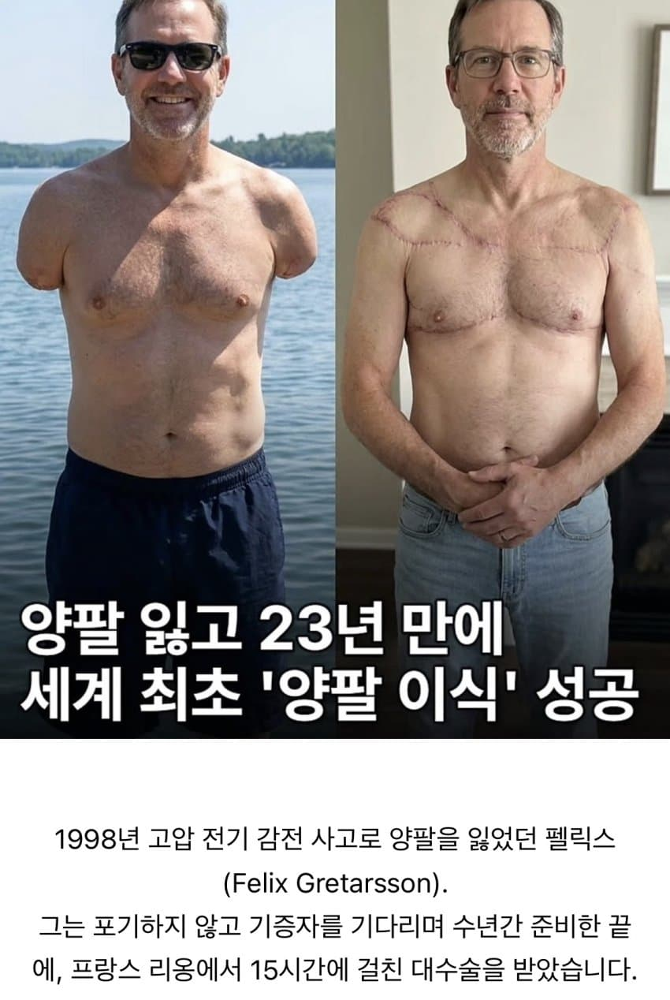
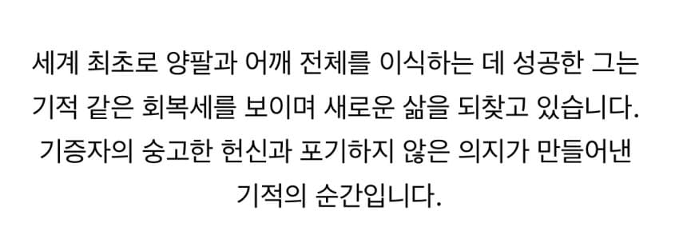

사실 이미 대중화 된 수술
기증자가 없을뿐


사실 이미 대중화 된 수술
기증자가 없을뿐
오체풀만족 떡락
클레이모어에서 봣서요
그 얇고 존나많은 신경이랑 모세혈관 어케했노 시발년아
근데 약간 몇개만 큰가닥 붙이면 주변가작에서 다시 스스로 붙고 이런거로 하는건가…?
실가닥을 다 연결해 진짜?
히소카 팔고쳐주던 그 여단 여자 기술이구만
자위냐 대딸이냐
무기징역,사형수들 딱대라!
아포템노필리아인가 그런 사람들 모집 하면 되는거 아닌가
오토메일이 이이요